第 31 题
已知图的邻接矩阵，则从顶点0 出发按深度优先遍历的结点序列是（ ）
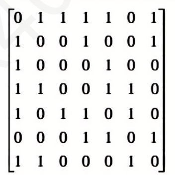
A． 0243156 B． 0136542 C． 0134256 D． 0361542 答案与解析 答案：C
因为是深度优先，找到与顶点0 直接相连的结点，由邻接矩阵知道是顶点1（多个相邻节点取第一个找到的未遍历到的结点），然后再在邻接矩阵中找与顶点1 直接相连的结点，得到顶点3.相同方法找到后续结点为：顶点4，顶点2.因为顶点2 的相连结点都已被遍历，所以退回到顶点4 继续遍历，遍历到顶点5，然后是顶点6。顺序为：0 1 3 4 2 5 6。
教材第 33 页 第 32 题
下列关于广度优先算法的说法中，正确的是（ ）。 I．当各边的权值相等时，广度优先算法可以解决单源最短路径问题II．当各边的权值不等时，广度优先算法可用来解决单源最短路径问题III．广度优先遍历算法类似于树中的后序遍历算法IV．实现图的广度优先算法时，使用的数据结构是队列
A． I、IV B． II、III、IV C． II、IV D． I、III、IV 答案与解析 答案：A
广度优先搜索以起始结点为中心，一层一层地向外层扩展遍历图的顶点，因此无法考虑到边权值，只适合求边权值相等的图的单源最短路径。广度优先搜索相当于树的层序遍历，选项Ⅲ错误。广度优先搜索需要用到队列，深度优先搜索需要用到栈，选项IV 正确。
教材第 33 页 第 33 题
下列关于深度优先遍历算法，正确的有（ ） I．深度优先遍历有向图过程中，DFSTraverse（）调用DFS 的次数是强连通分量的个数II．深度优先遍历有向图过程中，回边的存在说明图中包含环III．在有向图的深度优先遍历过程中，若一个顶点u 访问过后，另外一个顶点v 访问时发现有到这个顶点的边<v,u>，那么该有向图一定存在环。 IV．深度优先遍历算法遍历有向无环图，如果在退出DFS 时依次输出顶点，得到的是逆拓扑排序
A． II、IV B． I、II、III C． II、III、IV D． I、II、III、IV 答案与解析 答案：A
I 错误，无向图的深度优先遍历中，DFS的调用次数是强连通分量的个数。在有向图中并不满足，比如“1→2”。从顶点1 开始，这个图只调用了一次DFS，但是强连通分量有两个，分别是1，2。 II 正确，回边表示当前调用的dfs 过程中，正在访问的结点的边u，有一条边<u, v>，目的顶点v 仍在当前递归栈中，它保证了两个顶点在一次dfs()中。也就是说，u 是从v 走过来的，同时也能回到v，也就是产生了环。 III 错误，不在一个DFS()中，被访问两次，可能没有环。比如1←2，从1 出发，调用两次DFS()， 1 被访问后，第二次DFS（2），有边<2, 1>，但是没有环。（注意和II 的回边进行区分） IV 正确。如下图，逆拓扑序列是4321（想想为什么不能是2431？）
教材第 34 页 第 34 题
下列邻接表表示的有向图，从顶点1 开始进行深度优先遍历，可能得到不同遍历序列个数有 （）个
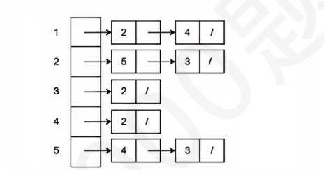
A． 2 B． 3 C． 4 D． 5 答案与解析 答案：D
答案：D。【解析】该有向图如下图所示，可能的深度优先遍历序列有12543 12534 12354 14235 14253
教材第 34 页 第 35 题
用Prim 算法求一个带权连通图的最小生成树，在算法执行的某个时刻，已选取的顶点集合U= {1,2,3}，已选取的边集合TE={(1,2),(2,3)}，要选取下一条权值最小的边，应当从（ ）组中选取。
A． {(1,4),(3,4),(3,5),(2,5)} B． {(3, 4),(3, 5), (4,5),(1,4)} C． {(1.2),(2.3),(3,5)} D． {(4.5).(1.3).(3.5)} 答案与解析 答案：A
U= {1, 2, 3}，V- U={4, 5, …}，候选边只能是这两个顶点集之间的边，只有A 符合题意。
教材第 34 页 第 36 题
已知无向图G 如下图所示，使用Prim 算法求图G 的最小生成树（从顶点b 出发），加到最小生成树中的边依次是（）
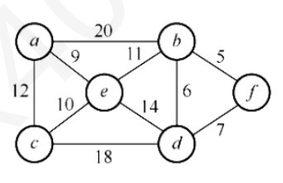
A． <b,f>,<b,d>,<a,e>,<c,e>,<b,e> B． <b,f>,<b,d>,<b,e>,<a,e>,<c,e> C． <a,e>,<b,e>,<c,e>,<b,d>,<b,f> D． <a,e>,<c,e>,<b,e>,<b,f>,<b,d> 答案与解析 答案：B
如下图所示注意：答案A 是kruskal算法的结果，可自己验证一下。
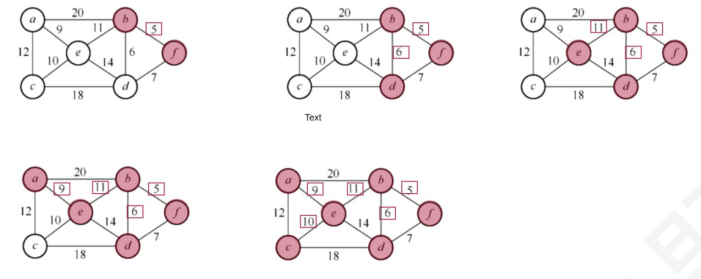
教材第 34 页 第 37 题
求下图的最小生成树过程中，在选择第三条边时，下列哪一条边即能是克鲁斯卡尔算法的选择也能是Prim 算法的选择（ ）
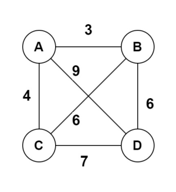
A． (A, C) B． (A, B) C． (B, D) D． (B, C) 答案与解析 答案：C
(B, D)这条边既可以成为kruskal算法的选择，也可以成为prim算法的选择。
教材第 34 页 第 38 题
下列关于最小生成树的陈述中，错误的是（ ）
A． 设(u,v)是连通图G 中的权重最小的边，那么(u,v)是G 的某棵最小生成树中的一条边 B． 设e 是连通图G=(V,E)的某条环路上权重最大的边，那么图G 中存在一棵不包含边e 的最小生成树 C． 若图的所有边的权重有正有负，则任一连接所有结点且总权重最小的一个边集合必然形成一棵树 D． 若T 是图G 的一棵最小生成树，如果减小了T 中的一条边的权重，那么T 仍然是G 的一棵最小生成树 答案与解析 答案：C
C 错误，若图的所有边的权重都是正数，则任一连接所有结点且总权重最小的一个边集合必然形成一棵树。因为假设边子集T 中存在环，则某两点间存在多条通路，移除其中一条通路可得子集T‘，T’仍连通所有点。因边的权重为正，有w(A')<w(A)，结论与条件矛盾，所以T必定为树。若边的权重准许为负，则子集T 不一定就是树，例如：如下图所示的图中三条边的总权重最小。
教材第 35 页 第 39 题
下列关于最小生成树算法Prim 和Kruskal 算法，正确的有（ ） I．Prim 算法每轮选取离上一轮次选取的顶点距离最近的顶点II．Prim 算法的时间复杂度可优化至𝑂𝐸𝑙𝑜𝑔𝑉III．稠密图情况下，无向图采用邻接矩阵存储，Kruskal 算法的时间复杂度是𝑂V2 IV．Kruskal 算法使用了并查集的数据结构
A． I、II、III、IV B． II、III C． II、IV D． III、IV 答案与解析 答案：C
I 错误，Prim每一轮选取的是离当前生成树距离最近的顶点。 II 正确，不使用堆优化的Prim算法，无论是邻接矩阵还是邻接表存储，都是𝑂𝑉2 。使用堆优化更新dist 数组的开销，算法步骤如下： • 初始把<起点，0>插入堆中，第二项是dist 值。 •出堆直到取到未被访问过的顶点i（visited 数组实现），然后遍历该顶点的邻边𝑉𝑗 ，直接向堆中插入< 𝑉𝑗, 𝐺𝑖𝑗> • 继续第二步，直到选取出所有顶点(堆空即可) 由于堆中会有顶点重复的边，每次出堆是惰性删除已经被访问过的顶点的数据，所以最多访问E次，每次出堆或者入堆的时间开销是𝑂𝑙𝑜𝑔2 𝑉，所以整体复杂度是𝑂𝐸𝑙𝑜𝑔2 𝑉III 错误，稠密图是𝐸= 𝑂𝑉2 ，所以临接矩阵存储下，时间复杂度是𝑚𝑎𝑥𝑂𝑣2 𝑂𝐸𝑙𝑜𝑔2 𝐸 ，因为𝐸= 𝑂𝑉2 ，所以𝑂𝐸𝑙𝑜𝑔2 𝐸≈𝑂𝑣2 𝑙𝑜𝑔𝑉> 𝑂𝑉2 ，所以时间复杂度是𝐸𝑙𝑜𝑔2 𝐸。注意：在稀疏图下，𝐸= 𝑂𝑉，邻接矩阵存储下，Kruskal算法时间复杂度为𝑂𝑉2 。 IV 正确，Kruskal算法需要并查集来判断选取的边是否属于同一个集合，以及合并集合操作，所以要使用并查集。
教材第 35 页 第 40 题
下列关于图的最短路径的相关叙述中，正确的是（ ）。
A． 最短路径一定是简单路径 B． Dijkstra 算法不适合求有回路的带权图的最短路径 C． Dijkstra 算法不适合求任意两个顶点的最短路径 D． Floyd 算法求两个顶点的最短路径时，𝑝𝑎𝑡ℎ𝑘−1 一定是𝑝𝑎𝑡ℎ𝑘 的子集 答案与解析 答案：A
A正确，见严蔚敏撰写的教材《数据结构》。Diikstra算法适合求解有回路的带权图的最短路径，也可以求任意两个顶点的最短路径，不适合求带负权值的最短路径问题。在用Floyd算法求两个顶点的最短路径时，当最短路径发生更改时，𝑝𝑎𝑡ℎ𝑘−1 就不是𝑝𝑎𝑡ℎ𝑘 的子集。
教材第 35 页 第 41 题
根据下图，关于Dijkstra、Prim、Floyd 算法说法正确的是（ ）
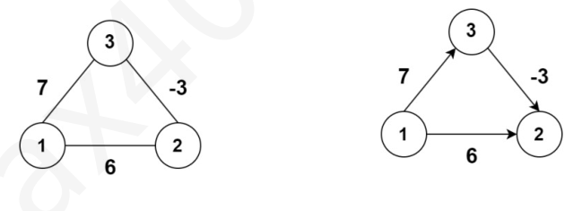
A． 用Dijkstra 算法求上面右图的结点1 单源最短路径，到结点2 和结点3 的最短路径长度分别为4和7 B． 用Prim 算法求左图最小生成树，从结点1 出发，得到的最小生成树保留的边权值为-3 和6 C． Dijkstra 和Prim 算法的思想都是基于贪心，都是从当前轮选出的结点作为中间结点去更新未处理结点的path 数组，且更新的策略一样470 D． 用Floyd 算法求右图的最短路径，经过一轮计算后，得到的矩阵𝐴0 = ∞0∞ ∞−30 答案与解析 答案：B
A错误，Dijkstra算法不能求上图的结点1单源最短路径，从结点1出发，先选择结点2，最短路径长度确定为6，然后选择结点3，最短路径长度为7。说明了Dijkstra 算法不能求解带负权图的单源最短路路径。 B 正确，Prim 算法①从结点1 出发，结点1 的相关边的权值为6、7，所以优先选6，即结点2 加入。②以1，2 作为一个整体，找出离这个整体的最短路径连接的未处理的结点，-3 是所有的边中最短的，所以结点3 加入，至此所有结点都已在生成树里面，B 正确。 C 错误，更新的策略并不一致，这也是Prim 和Dijkstra 的区别，设当前选定的结点为cur，图的边权用w 数组存储，要更新的未处理的结点为i， 𝑃𝑟𝑖𝑚算法：𝑝𝑎𝑡ℎ𝑖= 𝑚𝑖𝑛𝑝𝑎𝑡ℎ𝑖𝑤𝑖𝐷𝑖𝑗𝑘𝑠𝑡𝑟𝑎算法：𝑝𝑎𝑡ℎ𝑖= 𝑚𝑖𝑛𝑝𝑎𝑡ℎ𝑖𝑤𝑖+ 𝑝𝑎𝑡ℎ𝑐𝑢𝑟注：Prim 是以整个集合为源，Dijkstra 是以单个结点如本题的结点0 为源，需要加上path[cur]来存放0→cur 的最短路径长度信息。 D 错误，这是最后一轮计算得到矩阵𝐴2 。因为唯一会更新的是A[1] [2] = A[1] [3] + A[3] [2]，以结点3 为中间结点，那就是在第三轮计算得到的。通过本题，希望大家去复习和整理最小生成树，最短路径算法的相关考点，对照代码去理解算法的思想，真题考到了不至于整个空着。
教材第 35 页 第 42 题
下列关于图的最短路径的相关叙述中，正确的是（ ）。 I．Dijkstra 算法求单源最短路径不允许边的权为负II．Dijkstra 算法求每对顶点间的最短路径的时间复杂度是O(n^2) III．Floyd 算法求每对顶点间的最短路径允许边的权为负，但不允许含有负边的回路
A． I、II 和III B． 仅I C． I 和III D． II 和III 答案与解析 答案：C
在负权图中，Diikstra算法既不能保证每次选出的顶点都是真正的最近顶点，又不能保证已确定的最短路径不再被改变，因此Diikstra算法不允许边的权为负，Ⅰ正确。求每对顶点间的最短路径需要调用Dikstra 算法n 次，时间复杂度为𝑂𝑛3 ，Ⅱ错误。Floyd算法求每对顶点间的最短路径允许有负边存在，但不允许有包含负边组成的回路，Ⅲ正确。
教材第 35 页 第 43 题
使用有向无环图描述表达式((a+b)*(b*(c+d))+(c+d)*e)*((c+d)*e)，需要的边的个数至少是（ ）
A． 14 B． 15 C． 16 D． 13 答案与解析 答案：A
：见下图
教材第 36 页 第 44 题
下列说法错误的是（ ）
A． 求单源最短路径的Dijkstra 算法不适用于有负权边的有向网络 B． 最短路径一定是简单路径 C． 对有向图G ，如果以任一顶点出发进行一次深度优先或广度优先遍历能访问到每个顶点，则该图一定是完全图。 D． 拓扑排序算法不适合求无向图的拓扑序列 答案与解析 答案：C
如果有向图构成双向有向环时，则从任一顶点出发均能访问到每个顶点，但该图却非完全图。请思考A 的例子。
教材第 36 页 第 45 题
已知有向图G（V，E），其中V={v0,v1,v2}，E={(v0，v1)6，(v0，v2)13，（v1，v0）10， （v1，v2）4，（v2，v0）5}，对于Floyd 算法，A((1))是（ ） 0613061006130610
A． B． C． D． 1004904100410045∞0511051105110 答案与解析 答案：D
A、B、C、D 分别对应A−1 、A2 、A0 、A1 。
教材第 36 页 第 46 题
用Floyd 算法求下图的最短路径，得到的dist 矩阵结果是（ ）。
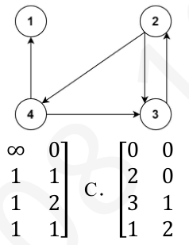
A． 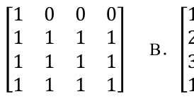
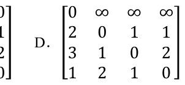
B． C． D． 答案与解析 答案：D
D 正确，对于选择题，简单的有向图可以通过手算以快速得到Floyd 算法的结果，若通过课本上给出的标准解法则比较浪费时间。
教材第 36 页 第 47 题
下列关于最短路径算法的叙述，正确的是（ ） I．Dijkstra 算法求有向图的单源最短路径，有向图可以带负权但是不能有负权环路II．Dijkstra 算法的核心思想是贪心策略III．Floyd 算法的核心思想是动态规划IV．Dijkstra 算法求每对顶点之间的最短路径的时间复杂度是𝑂𝑉2
A． I、II、III B． II、III、IV C． II、III D． 全部 答案与解析 答案：C
I 错误，Dijkstra算法不能求带负权图的单源最短路径，反例如下II、III 正确。 IV 错误，求每对顶点的最短路径，应该是𝑂𝑉3 。时间复杂度总结如下：
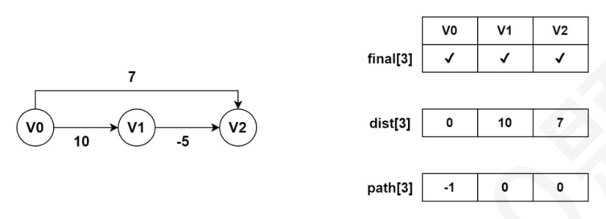
教材第 36 页 第 48 题
下图所示有向图的所有拓扑序列共有（ ）个
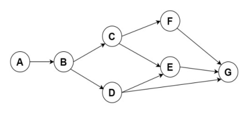
A． 4 B． 6 C． 5 D． 7 答案与解析 答案：C
本图的拓扑排序序列有ABCFDEG，ABCDFEG，ABCDEFG，ABDCFEG和ABDCEFG。
教材第 36 页 第 49 题
已知有向图G=(V，E)，其中V={a, b, c, d, e, f, g}，E={<a, b><a, c><a, d><b, e><c, e><c, f><d, f><f, g><e, g>}G 的拓扑序列是（ ）
A． a，c，d，f，b，e，g B． a，c，b，f，d，e，g; C． a，c，d，e，b，f，g D． a，b，e，c，d，f，g 答案与解析 答案：A
有向图如图。拓扑排序：①从AOV 网中选择一个没有前驱(入度为0)的顶点并输出
教材第 36 页 第 50 题
下列关于图的说法中，正确的是（ ）。 I．有向图中顶点V 的度等于其邻接矩阵中第V 行中1 的个数II．无向图的邻接矩阵一定是对称矩阵，有向图的邻接矩阵一定是非对称矩阵III．在带权图G 的最小生成树G，中，某条边的权值可能会超过未选边的权值IV．若有向无环图的拓扑序列唯一，则可以唯一确定该图
A． I、II 和III B． III 和IV C． III D． IV 答案与解析 答案：C
有向图邻接矩阵的第V 行中1 的个数是顶点V 的出度，而有向图中顶点的度为入度与出度之和，I 错。无向图的邻接矩阵一定是对称矩阵，但当有向图中任意两个顶点之间有边相连，且是两条方向相反的有向边时，有向图的邻接矩阵也是一个对称矩阵，Ⅱ错。最小生成树中的n-1 条边不能保证是图中权值最小的n-1 条边，因为权值最小的n-1 条边并不一定能使图连通。在下图中，左图的最小生成树如下图所示，权值为3 的边不在其最小生成树中。有向无环图的拓扑序列唯一并不能唯一确定该图。在下图所示的两个有向无环图中，拓扑序列都为V1, V2, V3, V4，IV错。
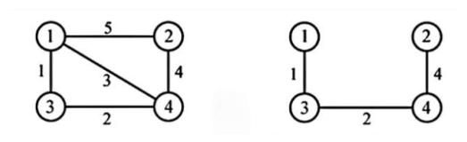
教材第 37 页 第 51 题
下列说法错误的是（ ）
A． 若一个有向图存在拓扑序列，则其邻接矩阵一定是上三角或下三角矩阵 B． 强连通分量是有向图中的极大强连通子图 C． 连通图的广度优先遍历中一般要采用队列来暂存刚访问过的顶点 D． 图的深度优先遍历中一般要采用栈来暂存刚访问过的顶点 答案与解析 答案：A
比如1→3→2，邻接矩阵不是上三角也不是下三角矩阵，但是存在拓扑序列{1，3，2}，A 错误。
教材第 37 页 第 52 题
在有向图G 的拓扑序列中，若顶点Vi 在顶点Vj 之前，则下列情形不可能出现的是（ ）
A． G 中有弧<Vi，Vj> B． G 中有一条从Vi 到Vj 的路径 C． G 中没有弧<Vi，Vj> D． G 中有一条从Vj 到Vi 的路径 答案与解析 答案：D
给出有向图G=（V，E），对于V中顶点的线性序列（Vi1，Vi2....， Vin），如果满足如下条件：若在G 中顶点Vi 到Vj有一条路径，则在序列中顶点Vi 必在顶点Vj 之前，则该序列称为G 的一个拓扑序列。根据定义可知，顶点Vi 顶点Vj 之前，并不能说明顶点Vi 和顶点Vj 之间邻接关系，但不可能存在一条从Vj 到Vi 的路径，因为存在从Vj 到Vi 的路径则说明顶点Vj必须在顶点Vi 之前，这与题目产生矛盾。因此答案应选择D。
教材第 37 页 第 53 题
若一个有向图中的顶点不能排成一个拓扑序列，则可断定该有向图（ ）
A． 是个有根有向图 B． 是个强连通图 C． 含有多个入度为0 的顶点 D． 含有顶点数目大于1 的强连通分量 答案与解析 答案：D
该图中存在回路，该回路构成一个顶点个数大于1 的强连通分量。
教材第 37 页 第 54 题
下列说法正确的是（ ） I．DFS 可实现有向无环图的拓扑排序II．Dijkstra 算法和Prim 算法都是基于贪心算法，Dijkstra 算法不一定得到一棵最小生成树III．AOE 网使用顶点表示事件，边表示活动IV．邻接矩阵为上三角或下三角的图一定能得到有序的拓扑序列
A． II、III、IV B． I、III、IV C． I、II D． 全部 答案与解析 答案：D
：I、II 正确，见王道图的应用小节课后大题第6、7 题。III、IV 正确。IV中的拓扑序列不唯一，但是一定有且只有一条有序的拓扑序列。相反，能得到有序的拓扑序列的有向图一定是上三角或者下三角矩阵这句话也是对的。
教材第 37 页 第 55 题
下列关于AOE 网的说法正确的是（ ）。
A． AOE 网的含义是以顶点表示活动的网 B． 从源点到汇点的最短路径称作关键路径 C． 存在关键路径的AOE 网一定是有向无环图 D． 关键路径上某个活动的时间缩短，整个工程的时间也就必定缩短。 答案与解析 答案：C
对于A，解决拓扑排序问题用到的是AOV 网（顶点表示活动的网），而解决关键路径问题用到的是AOE 网（边表示活动的网）。对于B，从源点到汇点的最长路径称作关键路径。对于C，在AOE 网中，如果有环，则可以认为环上的活动都以自身的结束作为自身可能开始的条件，那么将不存在所有活动都完成的状态，也就不存在关键路径。对于D，因为关键路径可能是不唯一的，所以某个活动的时间缩短，可能并不能使另一条关键路径的长度也缩短。
教材第 37 页 第 56 题
下面的叙述中，不正确的是（ ）
A． 关键活动不按期完成就会影响整个工程完成时间 B． 任何一个关键活动提前完成，将使整个工程提前完成 C． 所有关键活动提前完成，则整个工程提前完成 D． 某些关键活动若提前完成，将可能使整个工程提前完成 答案与解析 答案：B
一个关键活动提前完成，只能让这条关键路径变成非关键路径。当关键路径不止一条的时候，单单提高一条关键路径上关键活动的速度，是不能缩短整个工程工期的。所以，并不是网中任何一个关键活动提前完成，整个工程都能提前完成。但如果网中任何一个关键活动延期完成，整个工程一定延期。
教材第 37 页 第 57 题
下图所示AOE 网表示一项包含8 个活动的工程，通过同时加快若干活动的进度可以缩短整个工程的工期。下列选项中加快其进度也不可以缩短工程工期的是（）
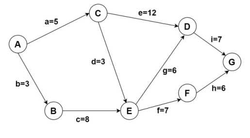
A． a, g, h B． b, g, i C． a, g, f D． a, d, h 答案与解析 答案：D
图中关键路径为b c f h、b c g i 和a e i，所以必须同时减少所有关键路径才可以缩短工期，只有D 不满足要求
教材第 38 页 第 58 题
下图的关键路径长度是（ ）。
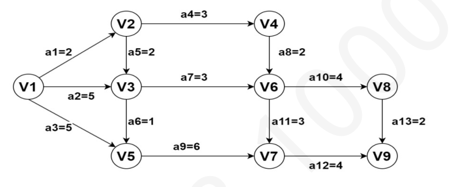
A． 16 B． 15 C． 18 D． 20 答案与解析 答案：A
此题可用关键路径常规的求解方法，一步步计算。𝑣𝑒源点= 0，𝑣𝑒𝑗= ，从前往后计算最早开始事件的值，将其余从源点到𝑣𝑗的所有路径中，路径长度比𝑚𝑎𝑥𝑖𝑣𝑒𝑖+ 𝑤𝑖𝑗ve小的且终点为𝑉𝑗的边从图中删除和ve值相等的路径上的边不用删除），即删除的一定是非关键的边。当𝑣𝑒(𝑉𝑗)求解完毕时，剩余能连通源点和汇点的路径都是关键路径。可得到如下图所示的结果，由此可知，AOE 图的关键路径是16。
教材第 38 页 第 59 题
已按勘误修正
下图是一个AOE 网，时间余量最大的活动是（ ）
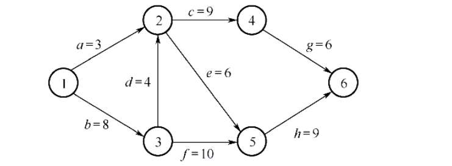
A． a B． c C． e D． d 答案与解析 答案：A
bdcg, bdeh, bfh 都是关键路径，关键路径长是27，只有活动a 不是关键路径上的活动。同学们可手动计算一下a 的时间余量，最晚开始时间是9，最早开始时间是0，所以时间余量是9。
勘误：题目配图已按勘误替换为下图。
教材第 38 页 第 60 题
下图所示AOE 网表示一项包含8 个活动的工程，增加活动c 或者增加活动e 的时间，工程的工期一定延长，那么活动a 的持续时间是（ ）
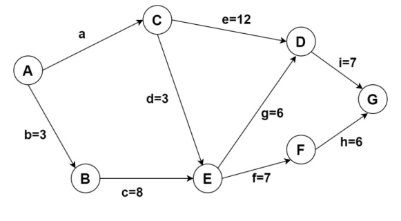
A． 5 B． 6 C． 7 D． 8 答案与解析 答案：A
增加活动c 或者增加活动e 的时间，工程的工期一定延长，说明c 和一定是关键路径上的活动，通过c 后续到终点的路径可以知道，关键路径长度是3+8+7+6=24。再根据关键路径长度来反推a，a→e→i 也是关键路径，所以活动a 的持续时间是24-12-7=5。答案选A。 【答案速对】 ACDABACCCDCBBAADABBBCCCDBDDBCDABBDCDDDCABCCCA(CB)BABCACBACBACCD
教材第 38 页